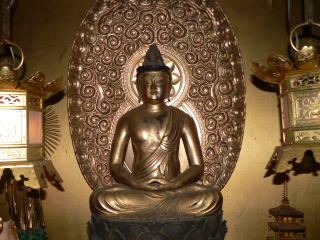
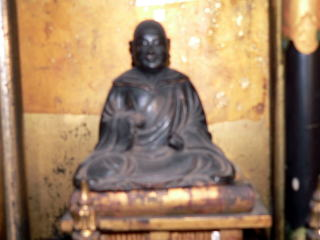
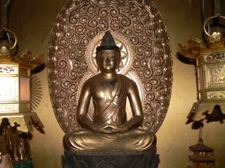
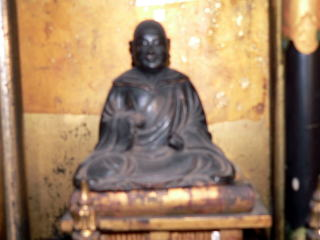

蓮通寺について
蓮通寺の由緒や、代々受け継がれてきた貴重な法宝物をご紹介いたします。
由緒
源平争乱の寿永三年（1184年）、征夷大将軍源義仲は粟津ヶ原で敗死し、その室山吹御前は子息義隆・義順を伴い、北近江浅井郡の山中で世の浮沈を窺って暮らしていたが、義仲を破った頼朝・義経の兄弟も世を去り、琵琶湖にすぐ近い海津の荘に住まいを移したところ、本願寺御開山親鸞聖人、越後に流罪となり琵琶湖を舟で渡ってこられ海津にお着きになり、義隆・義順兄弟と師弟の約諾を交わしてくださり、兄の義隆は海津荘岩谷の地で願慶寺開基となり、弟の義順は浅井郡塩津荘岩熊に赴き蓮通寺の開基となった。
時が下って本願寺中興された第八世蓮如上人からも教えをいただき、本願寺東西分派の際には教如上人に従い東本願寺に属し、第十三世宣如上人の次男である、長浜御坊大通寺霊瑞院宣澄師の曾孫が當院に入寺し、公家の綾小路家とも姻戚関係を結び、以降法儀相続して現在に至る。

法宝物

 



- 親鸞聖人御真筆・十字名号
- 親鸞聖人御真筆・六字名号
- 蓮如上人御真筆・六字名号
- 伝・親鸞聖人御自刻御影像
- 兆伝司筆・聖徳太子真向御影
- 護国山大聖寺本尊・大日如来坐像（西浅井町指定文化財・平安時代）
- 薬師如来坐像（平安時代）
お問い合わせ
ご葬儀、ご法要、その他ご不明な点がございましたら、お気軽にお問い合わせください。